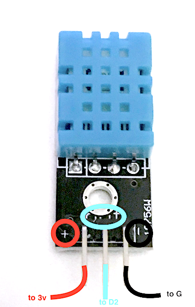

Reading the DHT Sensor from the ESP8266
The DHT11 or DHT22 sensors add the ability to sense temperature and humidity. The DHT22 is a more accurate version of the DHT11.
Lab Objectives
In this lab you will learn how to connect the DHT temperature and humidity sensor to the ESP8266 board and how to access data from the sensor. You will learn:
- The electrical connections needed to connect the DHT sensor to the ESP8266
- The library used to access the features of the sensor
- How to use the library functions to add a DHT sensor to an application
Step 1 - Installing the Library
To access the DHT sensors from the ESP8266 we need to add 2 libraries to the sketch, so back in the Arduino IDE access the library manager. Sketch -> Include Library -> Manage Libraries....
- Once in the Library Manager search for DHT. The top entry should be the Adafruit DHT sensor library which you should install.
- Adafruit have introduced a unified model to many of their sensor libraries, including the DHT library, and to use them you need to install the Adafruit Unified Sensor library, so search for it, it will appear at the bottom of the list, then install it.
When both of the libraries have been installed you can close the library manager.
Step 2 - Connect the DHT sensor to your ESP8266 board
Disconnect the ESP*266 board from your laptop/workstation before connecting the DHT sensor.
The DHT sensors have 4 connecting pins. When looking at the front of the sensor (mesh case) with the pins at the bottom, the connections are (left to right):
- +'ve voltage
- Data
- Not used
- Ground

If you have a DHT mounted on a module then you need to check the pinout, usually indicated on the board, with + (to 3V pin), - (to G pin) and out or data (to D2 pin):

Step 3 - Load an example sketch showing how to use the DHT sensor
To see how to use the DHT sensor there is an example sketch. File -> Examples -> DHT Sensor Library -> DHTtester. You need to make a couple of changes before you can run the sketch:
- Update the DHTPIN to the correct GPIO pin on the ESP8266 corresponding to D2 on the NodeMCU board. The pinout diagram will tell you that you need GPIO 4.
- Set the DHT type. If you are using DHT11 sensors (blue), uncomment the DHT11 line and comment out the DHT22 line.
When you save the sketch you will need to save it to your Arduino directory as you can't modify the example source. Once saved you can now compile and upload the sketch. This sketch uses Serial output to print out the values read, so you will need to open the Serial monitor and set the baud rate to match the Serial.begin() line in the sketch = 9600.
Step 4 - Understanding the DHT sensor library
To add the DHT sensor to your own application you need to do the following:
- Create an instance of DHT :
DHT dht(DHTPIN, DHTTYPE);- The first parameter is the GPIO the data pin is connected to
- the second parameter is the type of sensor
- Before using and commands to read the sensor you need to initialise the sensor library using the begin() call.
dht.begin();This is usually done in the setup() function. - Read the sensor required using one of the library functions:
- Note: by default temp is in C, but you can request to get a Fahrenheit temperature.
dht.readTemperature()dht.readTemperature(bool isFahrenheit)dht.readHumidity()